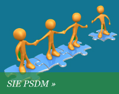
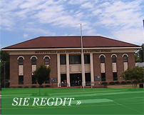
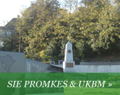

GAMBARAN UMUM PSDK
Bidang Pengembangan Sumber Daya Kesehatan merupakan salah satu bagian dari Dinas Kesehatan yang bertugas melaksanakan pengawasan, pemantauan dan pembinaan eningkatan potensi/mutu sumberdaya kesehatan.
SEKSI BAGIAN
  Tugas umum PSDK
Dinas Kesehatan Kabupaten Pamekasan
Tugas umum Bidang Pengembangan Sumber Daya Kesehatan antara lain :
- Pelaksanaan penyusunan kebutuhan pendidikan dan pelatihan sumberdaya manusia Kesehatan
- Pelaksanaan upaya peningkatan pendidikan dan keterampilan tenaga kesehatan
- Pelaksanaan penelitian dan pengembangan sumberdaya kesehatan
Kunjungi Kami di :